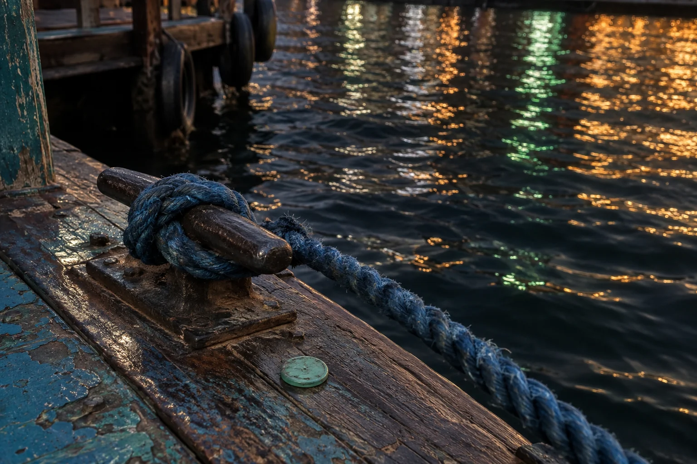
THE KNOT
Blue rope, rusted cleat, creek water doing its disco thing.
NO TOWERS. NO SUPERLATIVES. HABIBI, LOOK CLOSER.
FIELD ARCHIVE / DXB / 2015Three small proofs that a city lives at eye level.
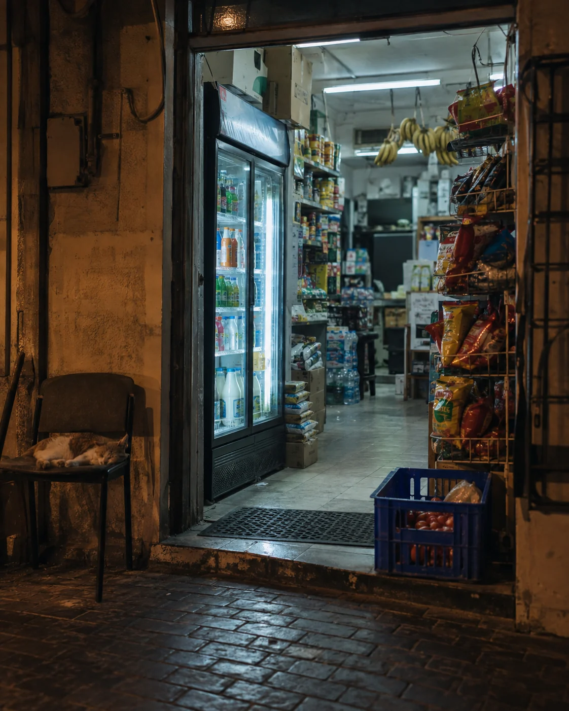
00 — COLD AISLE, HOT NIGHT
Not a skyline. Just the exact shade of white that means laban, chips and “keep the change, boss.”
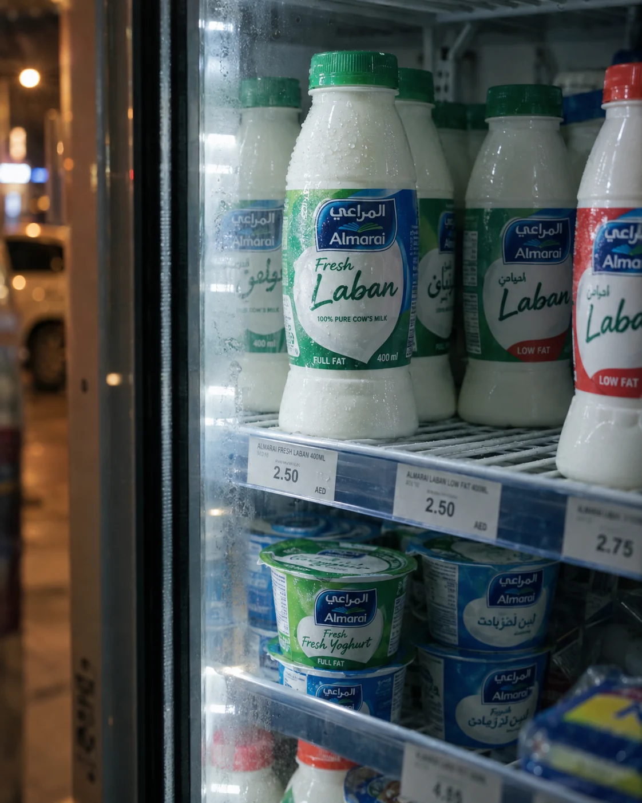
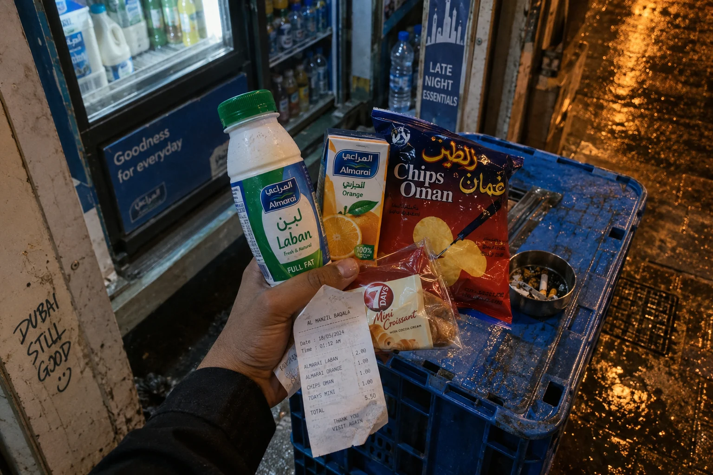
BAQALA ORDER #001Laban.
Chips Oman.
Something sweet.If you know, you don’t need the pin.
01 — THE BAQALA BEACON
The fridge hum is the neighbourhood’s lighthouse. Open late enough to save a bad craving, close enough that slippers count as footwear.
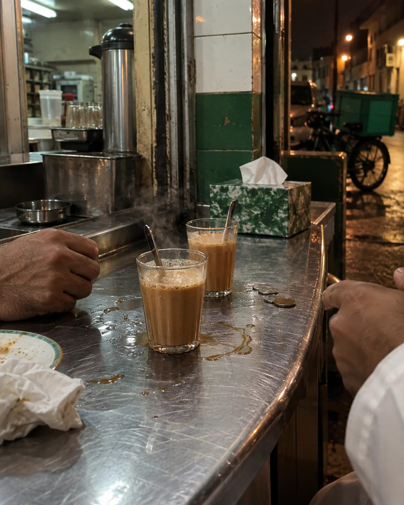
02 — CUP THEORY
Not a coffee meeting. Just a two-dirham pause by a stainless-steel counter while the city pretends it is not tired.
“Coming in two minutes.”— sent from twelve minutes away
03 — THE SHORT WAY ACROSS
A dirham. A rope. A wooden bench still warm from the last passenger. Some routes are older than “send location.”

Blue rope, rusted cleat, creek water doing its disco thing.
Less sugar. Extra hot. The only order that needs no menu.
That particular fluorescent white: not pretty, just perfect.
04 — NOT ON THE BROCHURE
Clock Tower before traffic. A sikka with no blue dot. Creek wind in your face. P12 after everyone swore they remembered where the car was.
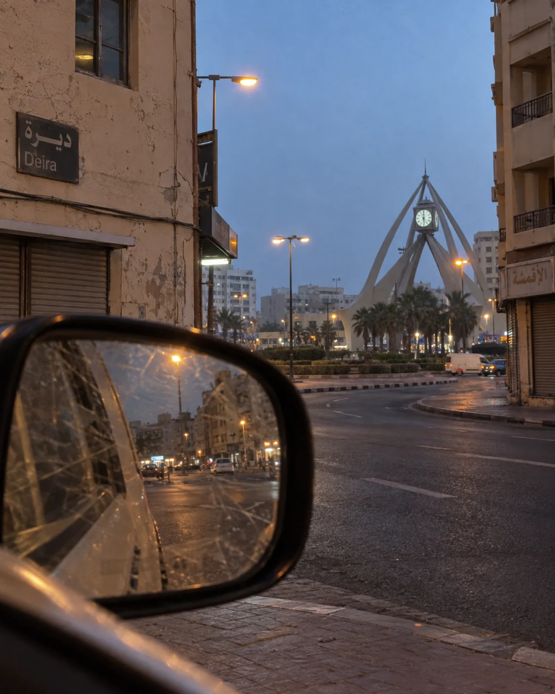
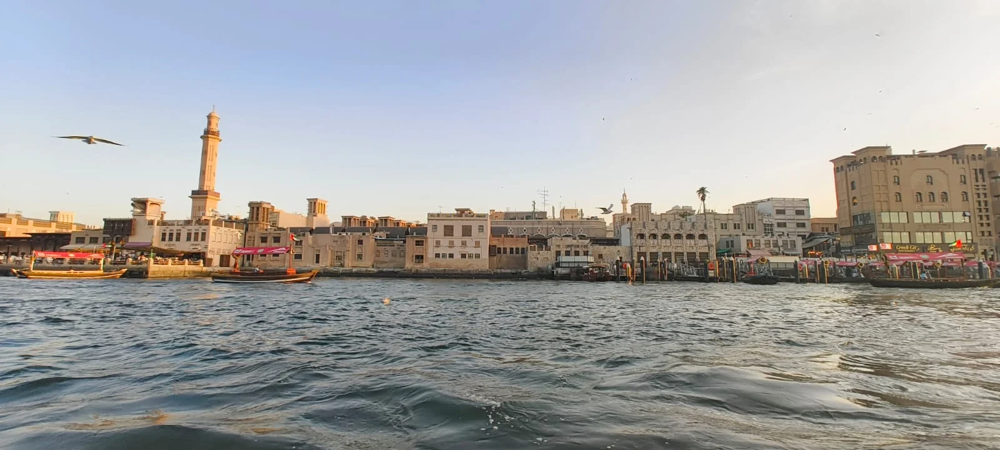
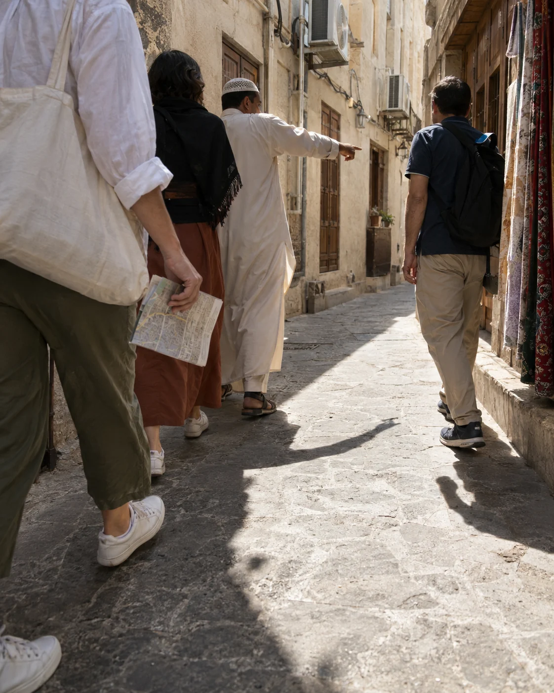
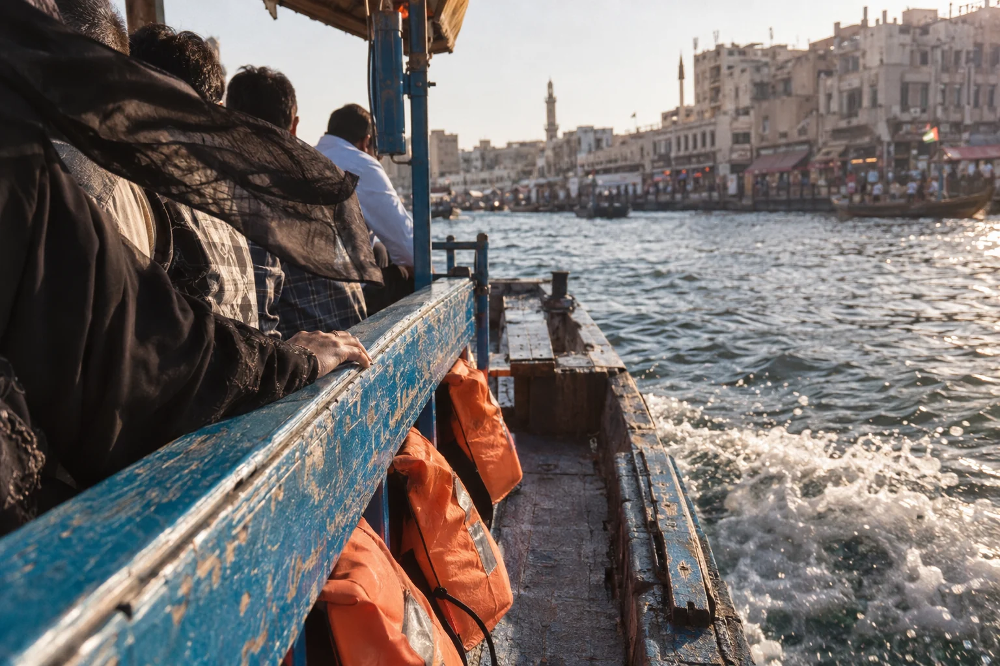
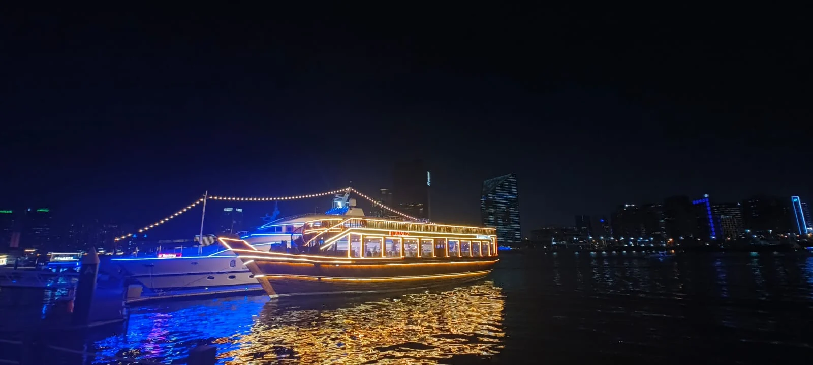
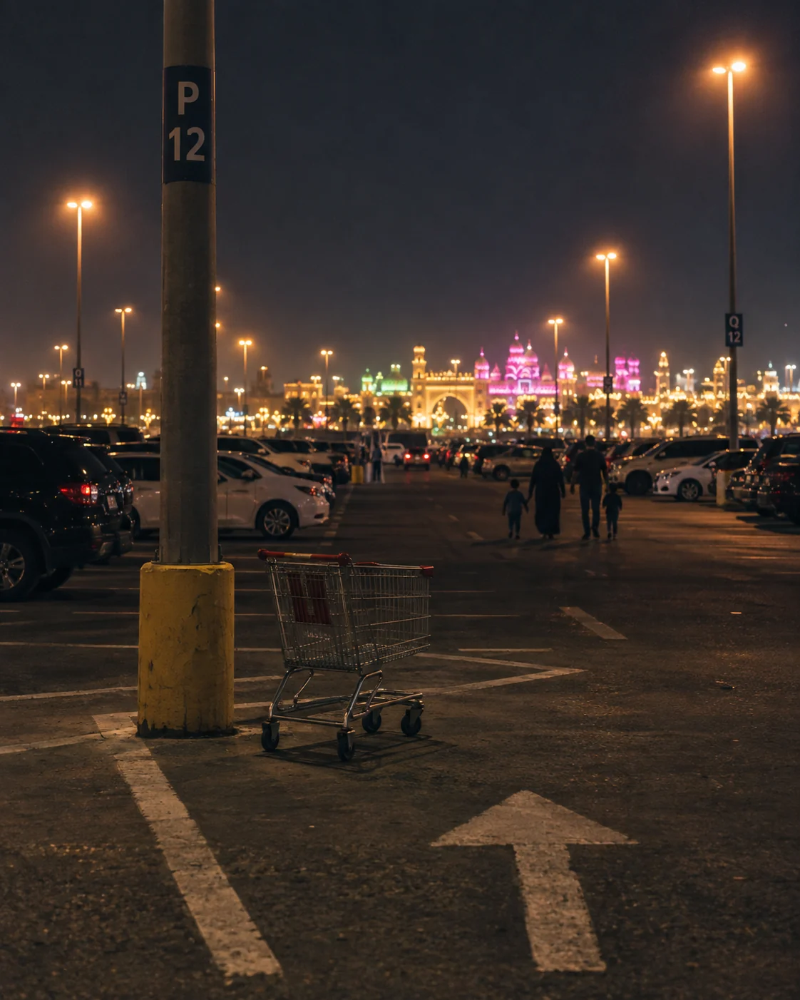
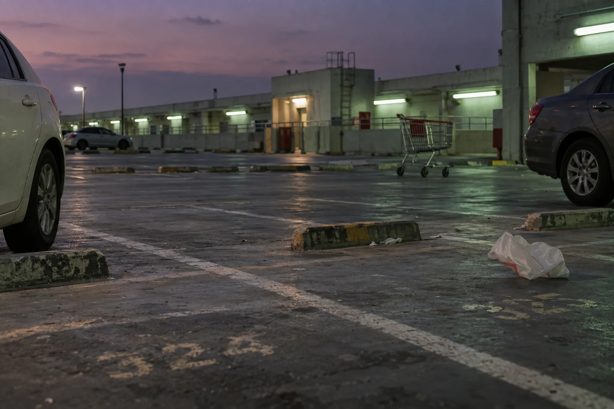
SEVEN DETOURS. ZERO SKYLINES. YALLA, KEEP WALKING →
FIELD NOTES — FOR LOCALS ONLY
“Mafi parking, I’ll wait in the car.”
THE NATIONAL COPING MECHANISM“Take the service road, not main road.”
ELITE ROUTE KNOWLEDGE“No need location. Behind the old Choithrams.”
URBAN CARTOGRAPHY“Same same. But different.”
THE ANSWER TO EVERYTHINGTHE CITY IS NOT A POSTCARD.
دبي في التفاصيل
BACK TO THE BAQALA ↑